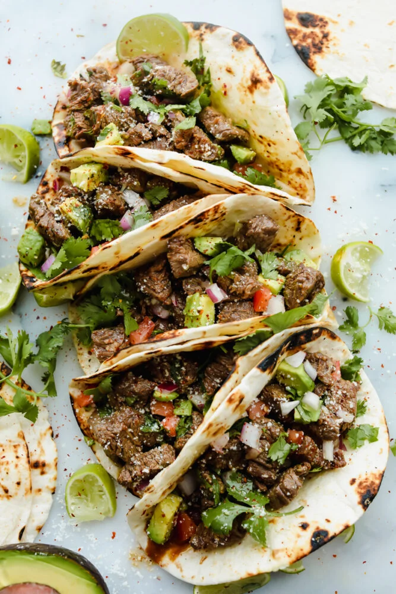

Street Tacos

Street Tacos are delicious, amazing, and oh so mouthwatering.
I cannot stop thinking about these!
They are SOO delicious.
You will want to gobble these all up at once!
Street Tacos have gotten more and more popular over the years.
The difference between these and “regular tacos” is that these are
typically in smaller tortillas. The reason they are smaller is that
when people ordered them off of the vendor carts or food trucks, they
wanted them to be able to hold the taco with one hand while walking down the street. Hence the name “street tacos.”
Ingredients
-
Flank steak or skirt steak
-
Soy Sauce
-
Worcestershire sauce
-
Lime
-
Minced Garlic
-
Cilantro
-
Chili Powder
-
Cumin
-
Salt and Pepper
-
Flour or Corn tortillas
Steps
-
Cut the flank steak into one-inch pieces.
In a medium-sized bowl add the soy sauce, Worcestershire, juice from one lime, garlic,
cilantro, chili powder, cumin, and salt and pepper.
-
Add the steak and let marinate in the fridge for 1-2 hours.
-
Heat a medium sized skillet to medium high heat.
Add the steak and marinade and cook for about 5-7 minutes or until no longer pink.
-
Put the steak in the center of your tortilla with desired toppings.
Return to Main Page